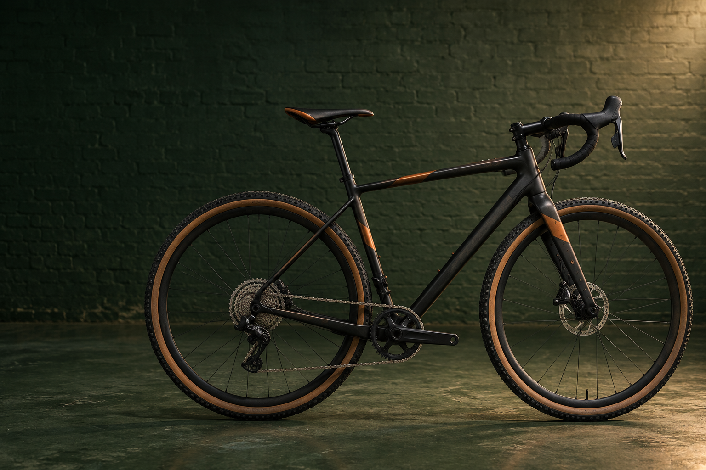

Location : Studio 02, Girona
Gravel Series
— Model G2
Nordkade
G2 carbon framesets
752unitsFrames780
Lead time64 days
Rating4.9
Model Overview
PL-G2COMPLETE WEIGHT8,640g
DRIVETRAIN1 × 12
WHEEL & TYRE700c× 45
IN STOCK124of 180